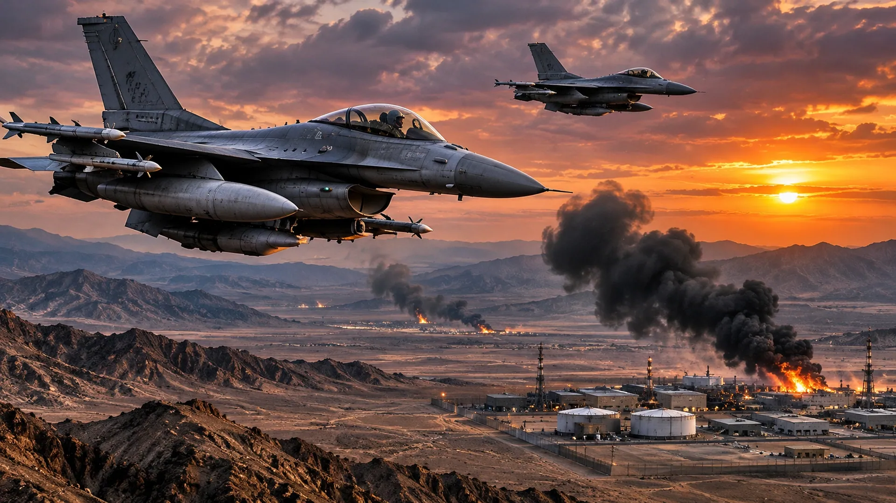

U.S. STRIKES IRANIAN AIR DEFENSE
Trump confirms limited strikes near Qeshm Island as the conflict and diplomatic efforts continue.

A strike on an air-defense position may sound limited. But when the target is on an island overlooking one of the world's most important shipping passages, there is nothing routine about it.
President Donald Trump acknowledged renewed U.S. strikes involving Iran's Qeshm Island. Reporting described an earlier American attack on an Iranian air-defense site after an alleged threat to U.S. aircraft. Iranian accounts of later explosions differed, and Reuters reported that officials had not confirmed the full sequence of reported missile strikes.
Qeshm sits in the Strait of Hormuz. Radar and surface-to-air missile systems in this area can complicate aircraft operations, but attacking them can also signal preparations for a wider air campaign. That is precisely why a narrowly described defensive strike attracts so much attention: its military purpose may be immediate, while its political meaning is much larger.
Washington has paired military pressure with negotiations conducted through intermediaries. That creates an unstable arrangement. Each side may believe additional force improves its bargaining position; each may also read the other's moves as proof that diplomacy is a cover for escalation.
The distinction between damaging one defensive system and opening a sustained campaign matters. There has been no basis in the sources reviewed here to describe every reported explosion as part of a newly launched large-scale offensive. Equally, the absence of a broad offensive today does not mean planners have ruled one out tomorrow.
For Americans watching this unfold, the key questions are practical: Are U.S. aircraft operating under new rules? Are more air defenses being moved into the region? And can negotiators make progress while both militaries continue taking action? Those answers will tell us more than another round of heated rhetoric.
Sources and further reading: Reporting and source material · Additional analysis